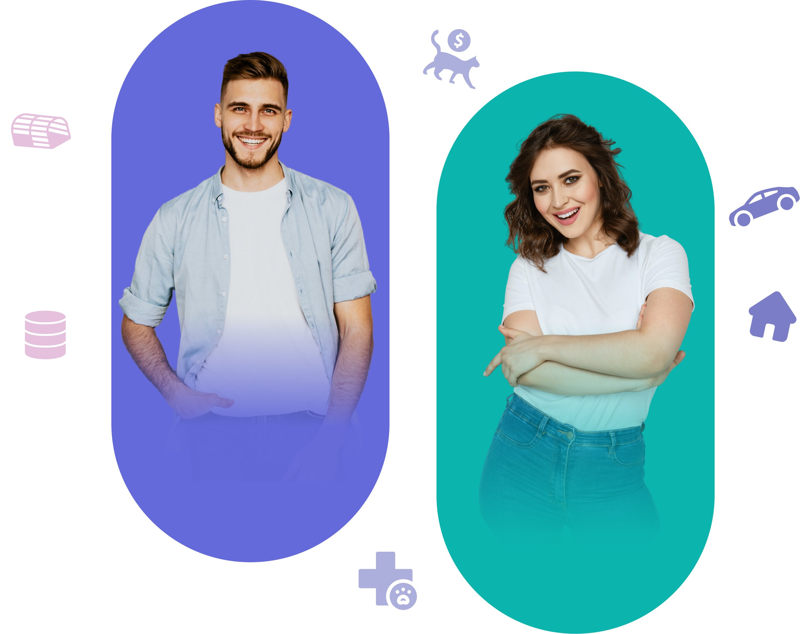

About
Connecting individuals involved in Trap-Neuter-Return(TNR) and enabling them to access and offer essential services.
TrapperAid is a platform designed to centralize and streamline the TNR process through managing and coordinating all aspects of TNR. Our goal is to connect the TNR community while facilitating fundraising, scheduling and providing access to low-cost veterinary appointments, and working with local governments.

Anyone interested in helping community cats can join Trapperaid!
AFTER BECOMING A MEMBER YOU WILL BE ABLE TO
Raise funds to spay/neuter your colony cats.